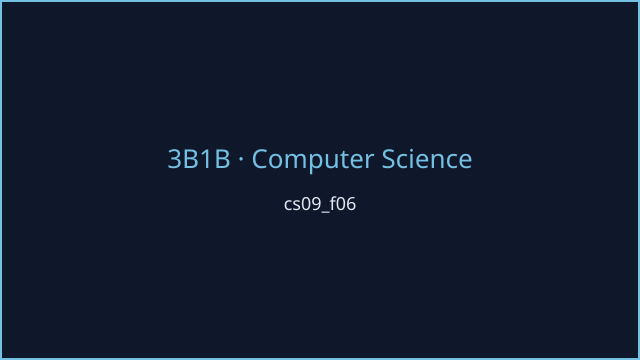

তথ্য যখন তারের মাধ্যমে বা ডিস্কে লেখা হয়, তখন কখনো কখনো একটি ০ হয়ে ১ বা ১ হয়ে ০ হয়ে যায়। প্রশ্ন হলো—এই ভুল কি শনাক্ত ও সংশোধন করা যায়?
শুধু ভুল ''ধরা'' যথেষ্ট নয়—আমরা চাই ভুলটি ''ঠিক''ও করে দিতে।
সবচেয়ে সরল পদ্ধতি হলো একটি ''প্যারিটি বিট'' যোগ করা—যার মান এমনভাবে বাছাই করা হয় যাতে মোট ১-এর সংখ্যা জোড় হয়। একটি বিট বদলালে এই নিয়ম ভেঙে যায়, তাই ভুল ধরা পড়ে।
কিন্তু এক প্যারিটি বিট দিয়ে শুধু ''ভুল আছে'' বোঝা যায়—কোথায় ভুল তা বোঝা যায় না। তার জন্য লাগবে একাধিক প্যারিটি বিট।
রিচার্ড হ্যামিং দেখিয়েছিলেন—৪টি তথ্য বিটের সাথে ৩টি প্যারিটি বিট যোগ করে ৭-বিটের একটি শব্দ তৈরি করা যায়, যা যেকোনো একটি বিটের ভুল সংশোধন করতে পারে।
দুটি কোডওয়ার্ডের যতগুলো অবস্থানে বিট আলাদা, তা হলো হ্যামিং দূরত্ব। একটি ভুল সংশোধন করতে হলে কোডওয়ার্ডগুলোর মধ্যে ন্যূনতম দূরত্ব কমপক্ষে ৩ হতে হবে।
$t$টি ভুল সংশোধন করতে ন্যূনতম দূরত্ব $2t+1$—এই সীমাটিকে ''হ্যামিং সীমা'' বলে।
প্রাপ্ত ৭-বিট শব্দের তিনটি প্যারিটি যাচাই করা হয়। তিনটি ফলাফল একসাথে একটি ''সিনড্রোম'' তৈরি করে, যা সরাসরি ভুল বিটের অবস্থান (১ থেকে ৭) নির্দেশ করে। সেই বিটটি উল্টে দিলেই ঠিক কোডওয়ার্ড পাওয়া যায়।
তিনটি প্যারিটি = তিন বিট = ৮টি সম্ভব সিনড্রোম—একটি ''কোনো ভুল নেই'' আর বাকি সাতটি ''কোন বিট ভুল''।
নিচের ইন্টারেক্টিভ উপাদান ও কুইজের মাধ্যমে পাঠের ধারণা নিজে যাচাই করুন।
